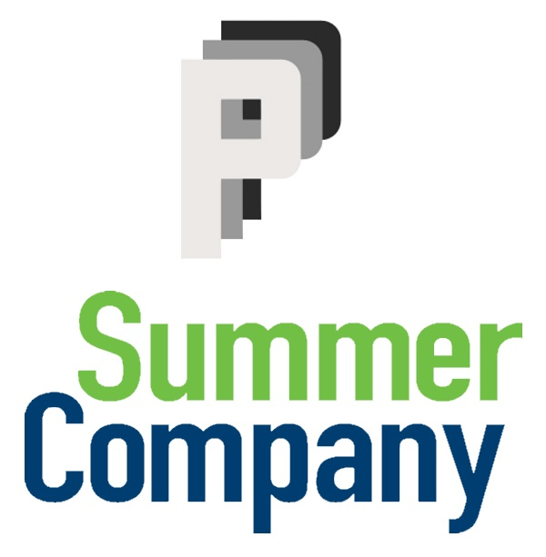

Co-op
Finastra
May 2018 - August 2018
Built software as a Co-op Software Developer for the FinTech company Finastra during my first co-op term in Mississauga. I learned a lot about REST APIs and the infrastructure that they're built on.
Learn More About Finastra
Side Project
Shoppe
December 2016
Fully Designed and Developed a fake e-commerce site using Ruby and the Sinatra Framework.
Github
Internship
Humans For Education
August 2016 - November 2016
Constructed a full-scale website and online store for the education nonprofit Humans For Education using the online platform Squarespace, using a ton of custom HTML and CSS.
Humans For Education Website
- Squarespace
- HTML
- CSS
- Javascript
Entrepreneurship
Pagewright Studios
April 2016 - September 2016
- HTML
- CSS
- Bootstrap
- Javascript
- JQuery
Launched and operated a web design company, Pagewright Studios, creating websites mostly out of HTML and CSS. This was done through the Summer Company program offered the Government of Ontario and Invest Ottawa. If you want to learn more about the program, I've included a link below.
Learn About the Summer Company Program

About Me
Hey! I'm Joe, and I'm a self-taught web developer and Computer Science student at the University of Waterloo. I've been making websites since I was fifteen and I've been hooked ever since. When it comes to languages, my weapons of choice are Python, Java, Ruby, as well as web developemnt languages like HTML, CSS, and Javascript
When I'm not programming, you can usually find me cooking, playing sports, or nerding out about my team in fantasy football (even though I still finished in last place).